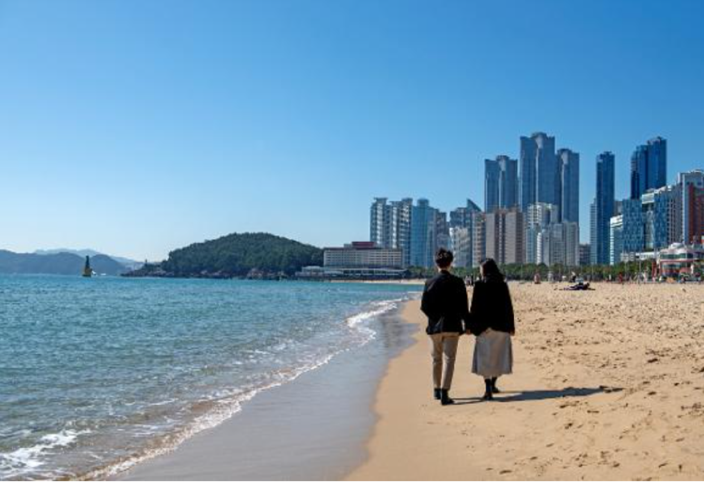
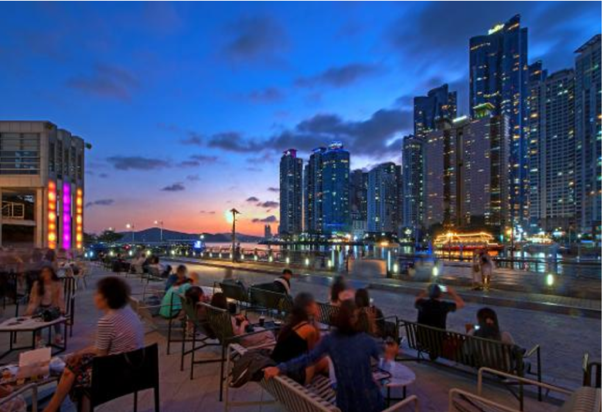
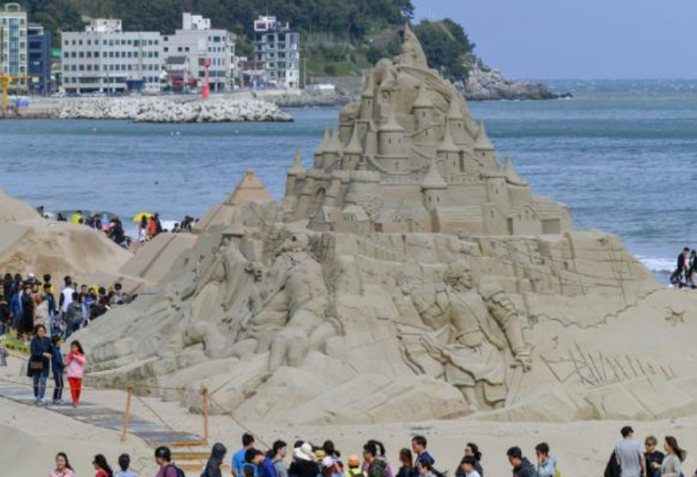

해운대
- 부산 해운대
- 해운대 해수욕장은 당연히 여름이라는 계절을 언급하지 않고는 이야기할 수 없는 곳이기도 하다.
여름이면 천 만 명이 넘는 피서객들이 이곳을 찾기 때문이다. 1.5km 길이의 백사장을 중심으로 오락시설과
부대시설이 잘 갖춰져 있어, 국적과 나이를 불문하고 수많은 이들을 만족시켜주고 있다. 해수욕과 태닝을
즐기려는 외국인부터 휴가를 보내기 위해 모여드는 피서객까지 여름의 해운대는 전국적인 핫플레이스가 된다.

해운대
- 부산 해운대
- 해운대 해수욕장의 풍경은 밤이면 더욱 매력적으로 변모한다.
동백섬 어귀에 위치한 더베이101에서 바라보는 밤의 마린시티 풍경도 빼놓지 말아야 할 코스다.
마천루의 불빛이 밤바다에 비치는 장관은 홍콩이나 뉴욕의 야경 못지않은 황홀함을 선사한다.
더베이101 내부에는 식사를 비롯해 간단히 맥주를 즐길 수 있는 가게도 갖춰져 있어 많은 이들이 찾고 있다.
주말이면 구남로 문화광장에서 열리는 공연행사까지. 해운대 해수욕장을 둘러싼 다양한 매력은 꼽을수록 무궁무진하다.

해운대
- 부산 해운대
- 매년 5월~6월이면 해운대 바다의 새하얀 모래들은 ‘해운대 모래축제’에서 예술작품으로 재탄생한다.
세계의 모래 예술작가들이 모여드는 큰 축제인 만큼 볼거리가 풍성하다.
7월의 여름 밤을 뜨거운 열기로 물들이는 부산바다축제도 놓치지 말아야 할 행사다.
해운대 해수욕장이 간직하고 있는 것은 비단 유명세뿐만이 아니다. 이곳을 둘러싼 모든 경험이
누군가에게는 듣기만 해도 가슴 설레는 추억으로, 새로이 이곳을 찾는 이들에게는 상상 이상의 경험을
기꺼이 선물해줄 것이기 때문이다.
